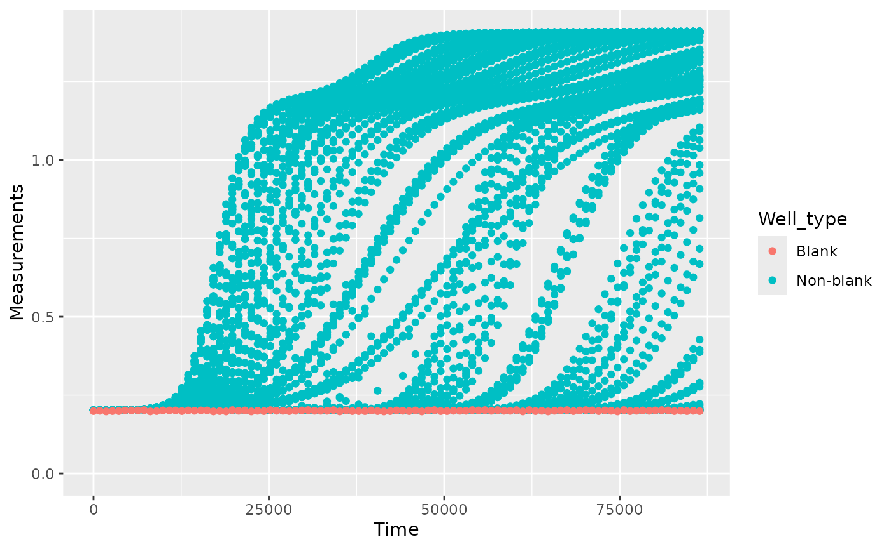

Pre-processing and plotting data
Mike Blazanin
Source:vignettes/gc04_preprocess_plot.Rmd
gc04_preprocess_plot.RmdWhere are we so far?
- Introduction:
vignette("gc01_gcplyr") - Importing and reshaping data:
vignette("gc02_import_reshape") - Incorporating experimental designs:
vignette("gc03_incorporate_designs") -
Pre-processing and plotting your data:
vignette("gc04_preprocess_plot") - Processing your data:
vignette("gc05_process") - Analyzing your data:
vignette("gc06_analyze") - Dealing with noise:
vignette("gc07_noise") - Best practices and other tips:
vignette("gc08_conclusion") - Working with multiple plates:
vignette("gc09_multiple_plates") - Using make_design to generate experimental designs:
vignette("gc10_using_make_design")
So far, we’ve imported and transformed our measures, then combined
them with our design information. Now we’re going to do some final
pre-processing steps and show how to easily plot our data with
ggplot.
If you haven’t already, load the necessary packages.
library(gcplyr)
#> ##
#> ## gcplyr (Version 1.9.0, Build Date: 2024-03-11)
#> ## See http://github.com/mikeblazanin/gcplyr for additional documentation
#> ## Please cite software as:
#> ## Blazanin, Michael. 2023. gcplyr: an R package for microbial growth
#> ## curve data analysis. bioRxiv doi: 10.1101/2023.04.30.538883
#> ##
library(dplyr)
#>
#> Attaching package: 'dplyr'
#> The following objects are masked from 'package:stats':
#>
#> filter, lag
#> The following objects are masked from 'package:base':
#>
#> intersect, setdiff, setequal, union
library(ggplot2)
library(lubridate)
#>
#> Attaching package: 'lubridate'
#> The following objects are masked from 'package:base':
#>
#> date, intersect, setdiff, union
# This code was previously explained
# Here we're re-running it so it's available for us to work with
example_tidydata <- trans_wide_to_tidy(example_widedata_noiseless,
id_cols = "Time")
ex_dat_mrg <- merge_dfs(example_tidydata, example_design_tidy)
#> Joining with `by = join_by(Well)`Pre-processing
Now that we have our data and designs merged, we’re almost ready to start processing and analyzing them. However, first we need to carry out any necessary pre-processing steps, like excluding wells that were contaminated or empty, and converting time formats to numeric.
Pre-processing: excluding data
In some cases, we want to remove some of the wells from our growth
curves data before we carry on with downstream analyses. For instance,
they may have been left empty, contained negative controls, or were
contaminated. We can use dplyr’s filter
function to remove those wells that meet criteria we want to
exclude.
For instance, let’s imagine that we realized that we put the wrong media into Well B1, and that strain 13 was contaminated. To exclude them from our analyses, we can simply:
example_data_and_designs_filtered <-
filter(ex_dat_mrg,
Well != "B1", Bacteria_strain != "Strain 13")
head(example_data_and_designs_filtered)
#> Time Well Measurements Bacteria_strain Phage
#> 1 0 A1 0.002 Strain 1 No Phage
#> 2 0 D1 0.002 Strain 19 No Phage
#> 3 0 E1 0.002 Strain 25 No Phage
#> 4 0 F1 0.002 Strain 31 No Phage
#> 5 0 G1 0.002 Strain 37 No Phage
#> 6 0 H1 0.002 Strain 43 No PhagePre-processing: converting dates & times into numeric
Growth curve data produced by a plate reader often encodes the
timestamp information as a string (e.g. “2:45:11” for 2 hours, 45
minutes, and 11 seconds), while downstream analyses need timestamp
information as a numeric (e.g. number of seconds elapsed). Luckily,
others have written great packages that make it easy to convert from
common date-time text formats into plain numeric formats. Here, we’ll
see how to use lubridate to do so:
First we have to create a data frame with time saved as it might be by a plate reader.
ex_dat_mrg <- make_example(vignette = 4, example = 1)
#> Joining with `by = join_by(Well)`
head(ex_dat_mrg)
#> Time Well Measurements Bacteria_strain Phage
#> 1 0:00:00 A1 0.002 Strain 1 No Phage
#> 2 0:00:00 B1 0.002 Strain 7 No Phage
#> 3 0:00:00 C1 0.002 Strain 13 No Phage
#> 4 0:00:00 D1 0.002 Strain 19 No Phage
#> 5 0:00:00 E1 0.002 Strain 25 No Phage
#> 6 0:00:00 F1 0.002 Strain 31 No PhageWe can see that our Time aren’t written in an easy
numeric. Instead, they’re in a format that’s easy for a human to
understand (but unfortunately not very usable for analysis).
Let’s use lubridate to convert this text into a usable
format. lubridate has a whole family of functions that can
parse text with hour, minute, and/or second components. You can use
hms if your text contains hour, minute, and second
information, hm if it only contains hour and minute
information, and ms if it only contains minute and second
information.
Once hms has parsed the text, we’ll use
time_length to convert the output of hms into
a pure numeric value. By default, time_length returns in
units of seconds, but you can change that by changing the
unit argument to time_length.
# We have previously loaded lubridate, but if you haven't already then
# make sure to add the line:
# library(lubridate)
ex_dat_mrg$Time <- time_length(hms(ex_dat_mrg$Time), unit = "hour")
head(ex_dat_mrg)
#> Time Well Measurements Bacteria_strain Phage
#> 1 0 A1 0.002 Strain 1 No Phage
#> 2 0 B1 0.002 Strain 7 No Phage
#> 3 0 C1 0.002 Strain 13 No Phage
#> 4 0 D1 0.002 Strain 19 No Phage
#> 5 0 E1 0.002 Strain 25 No Phage
#> 6 0 F1 0.002 Strain 31 No PhageAnd now we can see that we’ve gotten nice numeric Time
values! So we can proceed with the next steps of the analysis.
Plotting your data
Once your data has been merged and times have been converted to
numeric, we can easily plot our data using the ggplot2
package. That’s because ggplot2 was specifically built on
the assumption that data would be tidy-shaped, which ours is! We won’t
go into depth on how to use ggplot here, but there are
three main commands to the plot below:
-
ggplot- the ggplot function is where you specify thedata.frameyou would like to use and the aesthetics of the plot (the x and y axes you would like) -
geom_line- tellsggplothow we would like to plot the data, in this case with a line (another commongeomfor time-series data isgeom_point) -
facet_wrap- tellsggplotto plot each Well in a separate facet
We’ll be using this format to plot our data throughout the remainder of this vignette
# We have previously loaded ggplot2, but if you haven't already then
# make sure to add the line:
# library(ggplot2)
# First, we'll reorder the Well levels so they plot in the correct order
ex_dat_mrg$Well <-
factor(ex_dat_mrg$Well,
levels = paste0(rep(LETTERS[1:8], each = 12), 1:12))
ggplot(data = ex_dat_mrg, aes(x = Time, y = Measurements)) +
geom_line() +
facet_wrap(~Well, nrow = 8, ncol = 12)
Generally speaking, from here on you should plot your data frequently, and in every way you can think of! After every processing and analysis step, visualize both the input data and output data to understand what the processing and analysis steps are doing and whether they are the right choices for your particular data (this vignette will be doing that too!)
What’s next?
Now that you’ve pre-processed and visualized your data, it’s time to process (in most cases) and analyze (pretty much always) it!
- Introduction:
vignette("gc01_gcplyr") - Importing and reshaping data:
vignette("gc02_import_reshape") - Incorporating experimental designs:
vignette("gc03_incorporate_designs") - Pre-processing and plotting your data:
vignette("gc04_preprocess_plot") - Processing your data:
vignette("gc05_process") - Analyzing your data:
vignette("gc06_analyze") - Dealing with noise:
vignette("gc07_noise") - Best practices and other tips:
vignette("gc08_conclusion") - Working with multiple plates:
vignette("gc09_multiple_plates") - Using make_design to generate experimental designs:
vignette("gc10_using_make_design")